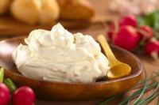
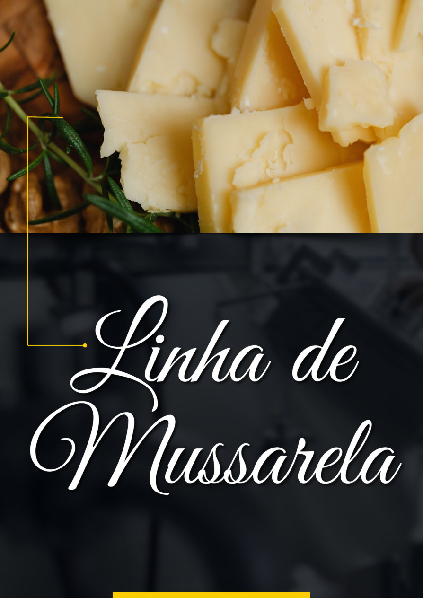
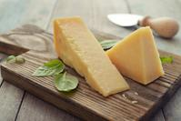
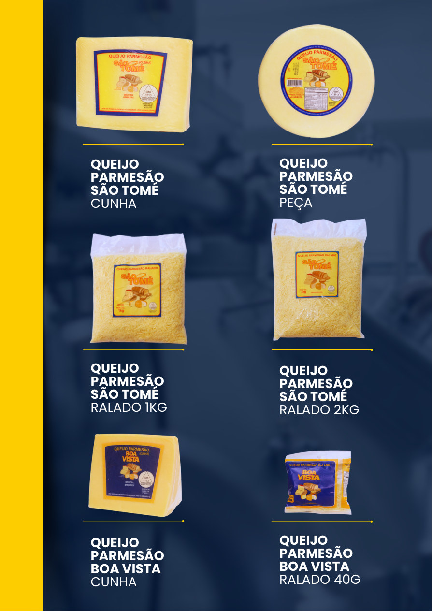
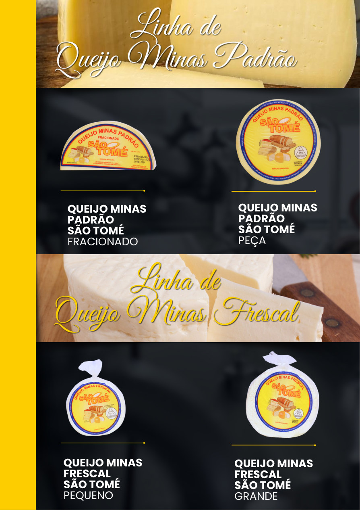
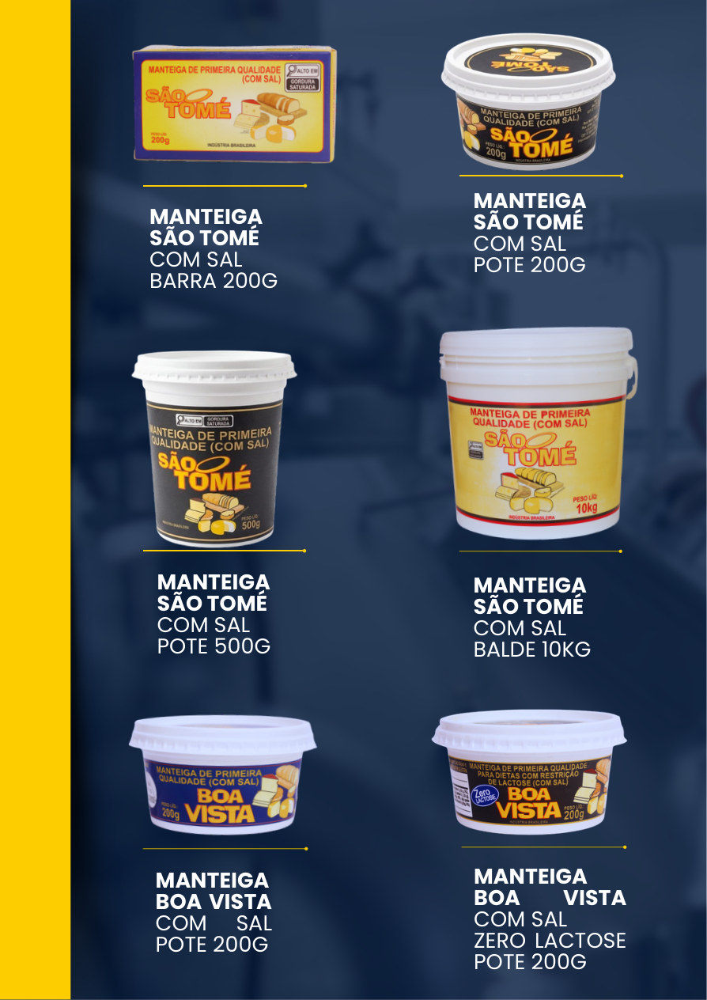

01 / LINHA
Manteigas
Manteigas com sal São Tomé e Boa Vista, em diferentes apresentações, além de opção zero lactose e mistura de manteiga e margarina.
Ver linha ↗Qualidade e dedicação em cada produto, presentes na mesa e nos melhores momentos.
Conheça nossos produtos →Com 25 anos de história, o Laticínio São Tomé tem o compromisso de conquistar e manter a confiança dos nossos clientes todos os dias.
Nascemos do sonho de oferecer produtos lácteos de alta qualidade e hoje somos referência de sabor e excelência, presentes em diversos lares e comércios.
Crescemos de forma sólida e consistente, com dedicação aos processos produtivos e respeito aos parceiros e clientes.
Conheça nossas linhas e opções para diferentes momentos e necessidades.
Manteigas com sal São Tomé e Boa Vista, em diferentes apresentações, além de opção zero lactose e mistura de manteiga e margarina.
Ver linha ↗
Requeijão cremoso São Tomé e Boa Vista em potes, bisnaga, balde e barra.
Ver linha ↗

Queijo parmesão São Tomé em cunha, peça e ralado, além de opções Boa Vista.
Ver linha ↗
Queijo Minas Padrão fracionado ou peça, e Queijo Minas Frescal pequeno ou grande.
Ver linha ↗
Provolone fresco defumado, ricota fresca com sal e queijo de coalho para espeto.
Ver linha ↗Consulte as imagens do catálogo para visualizar as embalagens e formatos.
